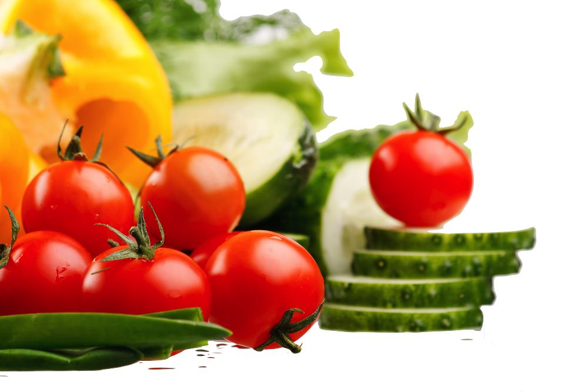
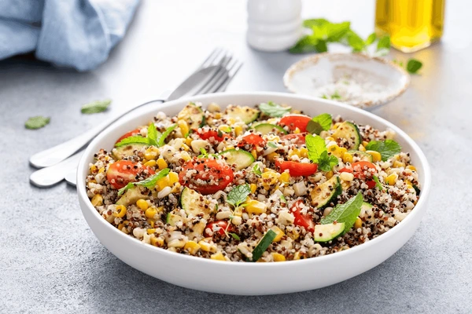

Nutritionist-Approved Healthy Recipes
Discover Our Easy Healthy Recipes
Explore our world of delicious and nutritionist-approved recipes tailored to your dietary needs and fitness goals. Our easy healthy recipes are designed to be simple to follow and packed with nutritious ingredients.
Featured Healthy Recipe: Quinoa Salad Bowl
Ingredients for this Easy Healthy Recipe:
- 1 cup cooked quinoa
- 1 cup mixed greens
- 1/4 cup cherry tomatoes, halved
- 1/4 cup cucumber, diced
- 1/4 avocado, sliced
- 2 tbsp feta cheese, crumbled
- 1 tbsp olive oil
- 1 tsp lemon juice
- Salt and pepper to taste
Cooking Instructions:
- In a bowl, combine cooked quinoa and mixed greens.
- Add cherry tomatoes, cucumber, and avocado.
- Sprinkle feta cheese on top.
- Drizzle with olive oil and lemon juice.
- Season with salt and pepper.
- Toss and enjoy your nutritionist-approved healthy meal!
Explore More Healthy Cooking Ideas
Discover our extensive collection of easy healthy recipes: